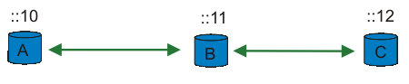
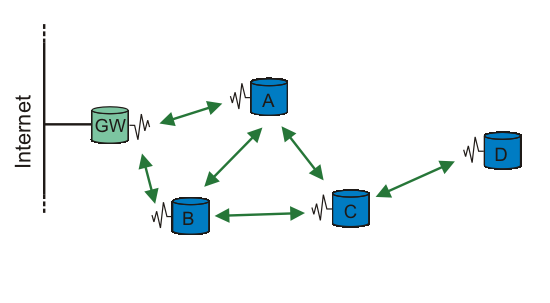

3. OLSR for Linux
There are several OLSR implementation for Linux, but not all of them support IPv6. You should know how to enable and use IPv6 on Linux. Peter Bieringer has written an excellent Linux IPv6 HOWTO.
There is one OLSR implementation that is becoming the "standard" and most widely used. It goes by the descriptive name "OLSRd" (old Unik-OLSR).
OLSRd is an implementation based on the INRA C code, but has been almost completely rewritten, so there is not much left of the original INRA code (that mean it almost GPL). OLSRd also is under very rapid development, and if you report in a bug, it is usually fixed in a matter of hours.
OLSRd fully comply to the OLSR RFC, support for plugins, and it has an optional GUI interface (to see what's going on). The implementation also has a informative "up-to-date" web-page with links to mailing lists and papers.
3.1. Installing OLSRd
There are up-to multiple new releases of OLSRd each month, so check the OLSRd web-site for the newest release.
The latest release as of this writing is 0.4.3, but by the time you read this there is almost certain a new release. Fetch the latest release from http://www.olsr.org/index.cgi?action=download.
Unpack, compile and install the source code:
# tar jxvf uolsrd-x.y.z # cd unik-olsrd-x.y.z # make # make installThe olsrd gets installed to /usr/bin/ and a default config file, olsrd.conf can be found under /etc
Check out the /etc/olsrd.conf config file, and change values to fit your system. All values in this file can be overridden with command line options to olsrd. The main options to change are:
# Debug level(0-9)
# If set to 0 the daemon runs in the background
DEBUG 1
# IP version to use (4 or 6)
IPVERSION 6
# A list of whitespace separated interface names
INTERFACES eth1
|
Later on, when you know OLSRd is configured correctly, you may set "DEBUG" to 0 to make it run in the background. You may then also add it to your init scripts. But to test that everything first, set this to at least 1 (setting this higher will produce a lot more info messages on APM, forwarding, parsing of the config file etc.)
3.2. Using OLSRd
3.2.1. On one host
When OLSRd is installed and configured, it can be started as root with:
# olsrd
|
All the settings in /etc/olsrd.conf can be overridden by command line options:
# olsrd -i eth1 -ipv6 -d 1
|
Would start olsrd listening on interface eth1 using IPv6 and with debug messages.
We start olsrd:
# olsrd -i eth1 -d 1 -ipv6
*** UniK olsrd-0.4.3 ***
hello interval = 2.00 hello int nonwireless: = 4.00 |

- This shows all the settings OLSRd is using. You may override these by either specifying it in the config file (/etc/olsrd.conf) or specify it at the command line. Read the OLSR RFC for a description on what all these settings means.

- OLSRd found our interface. If you are using OLSRd with multiple interfaces, "Multiple Interface Declaration" (MID) messages will be generated.

- If you are using OLSRd with multiple interfaces, it will pick the first interface specified as the "main" address.

- Since no other hosts are running OLSRd, this list is empty.
Another thing worth noticing, is that an entry is added to our routing table:
# route -A inet6
Destination: Next Hop Flags Metric Ref Use Iface
...
ff05::15/128 ff05::15 UAC 0 1 1 eth1
...
|
This is the IPv6 multicast address OLSR is using to talk to other nodes running OLSR.
3.2.2. Adding other hosts
There is no point in using OLSRd on only one node, so we add some nodes. You will then see the "neighbor list" gets updated:
neighbor list: 12:55:14.733586 neighbor list: 12:55:18.803585 Willingness for fec0:106:2700::11 changed from 0 to 3 - UPDATING |
- Another node detected (node B). This specifies the willingness of a node to carry and forward traffic for other nodes. Here the new node fec0:106:2700::11 is willing to forward traffic. A host with low battery may not be willing to forward large amount of traffic, - so it will proclaim a lower willingness value (routing based on powerstatus is available as a plugin).
- The node has been added to our routing table. We can not (yet) reach any other node by way of this node, since the 2-hop neighbor list ([2hlist:]) is empty. A 2-hop neighbor is a node heard by a neighbor.
- Here is a third node (node C) running OLSRd.
- After a short time, when all nodes have been updated and routes calculated, we may also reach any of the other nodes via the other. The 2-hop neighbor list ([2hlist:]) is populated: We can reach node B via C.

- Here we can reach node C via B.
You will also see the routing table is updated with the new hosts:
# route -A inet6
Destination: Next Hop Flags Metric Ref Use Iface
...
fec0:106:2700::11/128 :: UH 1 0 0 eth1
fec0:106:2700::12/128 :: UH 1 0 0 eth1
...
|
The real beauty of OLSR is when you add a bunch of nodes and move them around. You can still reach each one of them either directly (if they are close), or through other nodes.
3.2.3. Movement
When every node can reach every other node, it's no fun. Let's start moving the nodes, so that node "A" and "B" are out of (radio) range of each other. So when we move node "A" far enough away so that it can't hear node "C", all traffic must go through node "B":

We move our three nodes so that node A and C must speak through node B to reach each other.
Tip: Instead of physically moving the nodes around, you can use ip6tables. You can drop all packet using the MAC-address. You just need to block on one node:
# ip6tables -A INPUT -m mac --mac-source XX:XX:XX:XX:XX:XX -j DROP |
The output from OLSRd on host A is then:
neighbor list: 13:22:35.693587
fec0:106:2700::11:l=1:m=1:w=3[2hlist:fec0:106:2700::12:] |
- We can reach node B directly, and via node B we can reach node C.
The routing table also gets updated. For node A to reach node C it must go through node B:
# route -A inet6
Destination: Next Hop Flags Metric Ref Use Iface
...
fec0:106:2700::11/128 :: UH 1 1 0 eth1
fec0:106:2700::12/128 fec0:106:2700::11 UGH 2 0 0 eth1
...
|
3.3. What about HNA messages?
" In order to provide this capability of injecting external routing information into an OLSR MANET, a node with such non-MANET interfaces periodically issues a Host and Network Association (HNA) message, containing sufficient information for the recipients to construct an appropriate routing table."
" An example of such a situation could be where a node is equipped with a fixed network (e.g., an Ethernet) connecting to a larger network as well as a wireless network interface running OLSR." --- RFC3626: OLSR, section 12 (page 51).

OLSR with a gateway (GW), that sends out HNA messages. All the other nodes may then be accessing the "Internet"
To have one node, act as a gateway and send out HNA messages, you must change the HNA6 in /etc/olsrd.conf:
# HNA IPv6 routes
# syntax: netaddr prefix
# Example Internet gateway
HNA6 :: 0
|
When you start OLSRd, you will see the node is sending out HNA messages periodically:
...
Sending HNA (48 bytes)...
...
|
When the other nodes receives a HNA message, they update their routing table:
# route -A inet6
Destination: Next Hop Flags Metric Ref Use Iface
...
::/0 fec0:106:2700::1 UG 1 0 0 eth1
...
|
You may also have multiple nodes in a MANET to act as gateways (sending out HNA messages). Each mobile node then use the nearest gateway.
3.4. Plugin support
As of version 0.4.3 OLSRd also support plugins. Plugins may be used to add extended functionality in a MANET. If only a subset of the nodes knows how to interpret the messagetype, it will be forwarded by all the nodes by the "default forwarding algorithm" (see section 3.4.1 in the OLSR RFC). This way certain nodes may add special functionlity into OLSR.
As of this writing, two example plugins is included in the OLSRd release. One of these plugins add routing based on powerstatus. If one node has low battery, it can set its willingness lower and traffic may be routed through other nodes.
3.5. Optional GUI
OLSRd also has an optional GUI, which can show a list of available nodes and grab packets. To compile the GUI front end, you must have GTK2. In unik-olsrd-x.y.z directory do:
# cd front-end
# make
# make install
|
 | Remember to start OLSRd with the -ipc switch or set IPC-CONNECT yes in /etc/olsrd.conf to enable the GUI to chat with OLSRd. |
To see some examples of the use of GUI, check out http://www.olsr.org/index.cgi?action=gui
3.6. Other OLSR implementations
There is also other OLSR implementations, none have gained as much popularity as OLSRd, and none of them (except QOLSR?) are fully RFC compliant.
3.6.1. INRIA
INRIA was one of the first(?) implementation of OLSR http://hipercom.inria.fr/olsr/#code. Their web-site has not been updated for quite a while, and the OLSR code you can download only complies to draft-ietf-manet-olsr-03.txt (it's now an RFC). There is suppose to be another more up-to-date version of INRIA olsr, but I have not found it. INRIA OLSR does not support IPv6.
3.6.2. NROLSR
The "US Naval Research Laboratory" (NRL) also has an OLSR implementation. It is written in C++, and has IPv6 support. http://pf.itd.nrl.navy.mil/projects/olsr/
3.6.3. CRCOLSR
CRCOLSR is a implementation based on the French INRIA code. It is is supposed to be maintained by "Communication Research Center" (CRC) in Canada. But as of this writing, there have been no new releases since April 3, 2003. http://pf.itd.nrl.navy.mil/projects/olsr/